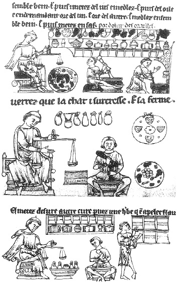

ŞEKİL 14. Salernolu Roger Frugardi’nin (1140 öncesi-~1195) Chirurgia (Cerrahlık) adlı kitabından eczacıların çalışmaları: Yukarıdaki resimde eczacı ustası, bir preparat için yanındaki yuvarlak masa üzerinden kuşbakışı görülen gerekli eczaları tartarken çıraklar onları havanda dövüp duvarla çevrili şömine içindeki ateşin üzerinde ısıtarak karıştırıyorlar. Raflarda kutular, amfora türü ve küçük fıçı şeklinde kaplar, şişeler, kap olarak kullanılan boynuzlar, ayrı ayrı iplerle asılmış ecza torbaları ve eczalar görülmektedir. Ortadaki minyatürde de benzer sahneler yer almaktadır. Burada özellikle sağ üstte asılı yuvarlak levhada dört adet arma görülmektedir. Eczane resimlerinde bu tür arma sergilemesine daha çok 15. yüzyıldan itibaren rastlanmakta olup bu resimdeki, en eski uygulamalardan biri olmalıdır. Alttaki resimde ise eczaların seçilmesi, tartılması ve işlenmesi sergilenmektedir (13. yüzyıl Fransızca elyazması, Trinity College, Cambridge).42